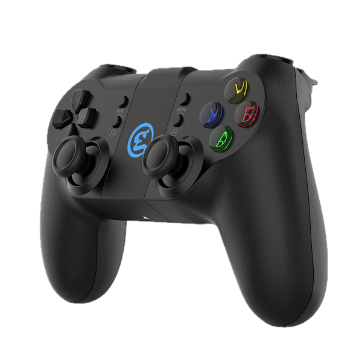

GameSir T1d controller & pygame
2025-05-02
- Connect a GameSir T1d controller to your computer via Bluetooth using a BLE hacking approach (the controller normally only works with the Tello app)
- Parse controller input data for all buttons, joysticks, and triggers using Python and bleak
- Create a pygame-compatible wrapper that lets you use the controller in any Python application
- Control your Tello drone with precise analog joysticks instead of keyboard keys
- Complete working code provided with step-by-step explanation of the controller hacking process
Series: Code, Fly & AI
Controlling a drone with a keyboard is not great, neither is using the touch-screen of a phone. That’s why I bought the recommended controller for the Tello: the GameSir T1d.

Hook up the GameSir T1d
Initially this seemed like a no-brainer, and I was surprised why no-one else hadn’t done it yet: replace the keyboard strokes with signals from the GameSir T1d controller. It turns out that this controller was specifically modified to connect ONLY through the Tello app.
Normally the code below is enough to connect to a game controller from a python script:
import pygame
pygame.init()
pygame.joystick.init()
# Check for connected controllers
joystick_count = pygame.joystick.get_count()
if joystick_count == 0:
print("No controller detected. Please connect your GameSir T1d controller.")
return None
# Initialize the first controller detected
joystick = pygame.joystick.Joystick(0)
joystick.init()In our case the output was:
No controller detected. Please connect your GameSir T1d controller.Oh oh, problem!
Hack it!
After some searching and LLM’ing it became clear that there is a way to make it work.
Pfew!
For Internet historians, here is the evolution of the hack:
GameSir T1D hack version 5
I’m honored to step in the footsteps of these four hackers and try to get iteration five to work!
First we need to get the controller to connect. Simply pairing via Bluetooth won’t work.
The GameSir T1d gets into pairing mode by simply powering it on. The four blue power LEDs start blinking when trying to connect. At that state we run the script below (on github: gamesirT1d-connect.py).
There is a tiny button labeled pair above another tiny button labeled C1. This pair button can be used to pair a new device (great UX!). Clicking it while connected, will cause the Bluetooth connection to be dropped. So don’t click it while controlling a drone!
import asyncio
from bleak import BleakClient, BleakScanner
# The name our controller should broadcast as
CONTROLLER_NAME = "Gamesir-T1d"
async def main():
print("Starting BLE scan for GameSir-T1d controller...")import asyncio
from bleak import BleakClient, BleakScanner
# The name our controller should broadcast as
CONTROLLER_NAME = "Gamesir-T1d"
async def main():
print("Starting BLE scan for GameSir-T1d controller...")
# First, scan for all available BLE devices
print("Scanning for BLE devices...")
devices = await BleakScanner.discover()
# Print all found devices to help with debugging
print(f"Found {len(devices)} Bluetooth devices:")
for i, device in enumerate(devices):
print(f"{i+1}. Name: {device.name}, Address: {device.address}")
# Try to find our controller
target_device = None
for device in devices:
if device.name and CONTROLLER_NAME.lower() in device.name.lower():
target_device = device
print(f"Found controller: {device.name}, Address: {device.address}")
break
if not target_device:
print(f"No device found with name containing '{CONTROLLER_NAME}'")
print("Is the controller turned on and in pairing mode?")
return
# Try to connect to the controller
print(f"Attempting to connect to {target_device.name}...")
try:
async with BleakClient(target_device.address, timeout=10.0) as client:
if client.is_connected:
print(f"Successfully connected to {target_device.name}!")
# List available services and characteristics
print("\nAvailable services and characteristics:")
for service in client.services:
print(f"Service: {service.uuid}")
for char in service.characteristics:
print(f" Characteristic: {char.uuid}")
print(f" Properties: {char.properties}")
# Wait a moment so we can see the connection is established
print("\nConnection successful. Press Ctrl+C to exit...")
await asyncio.sleep(10)
else:
print("Failed to connect")
except Exception as e:
print(f"Error connecting to device: {e}")
if __name__ == "__main__":
# Make sure controller is in pairing mode before running this
print("Make sure the GameSir-T1d controller is turned on and in pairing mode.")
print("(Typically hold power button until LEDs flash rapidly)")
input("Press Enter to start scanning...")
# Run the async main function
asyncio.run(main())Make sure the GameSir-T1d controller is turned on and in pairing mode.
(Typically hold power button until LEDs flash rapidly)
Press Enter to start scanning...
Starting BLE scan for GameSir-T1d controller...
Scanning for BLE devices...
Found 11 Bluetooth devices:
1. Name: Gamesir-T1d-39BD, Address: FDF00BC3-1DEE-1525-0B34-7E2D3391C401
2. Name: None, Address: 3A2C8191-D3F5-F471-BC81-75AFE2DB0D60
3. Name: None, Address: 772F5433-AAE9-D456-209C-DEA32D192E10
...
11. Name: None, Address: 80334171-1943-B3DE-7DDD-773753B852C3
Found controller: Gamesir-T1d-39BD, Address: FDF00BC3-1DEE-1525-0B34-7E2D3391C401
Attempting to connect to Gamesir-T1d-39BD...
Successfully connected to Gamesir-T1d-39BD!
Available services and characteristics:
Service: 00008650-0000-1000-8000-00805f9b34fb
Characteristic: 00008651-0000-1000-8000-00805f9b34fb
Properties: ['read', 'write', 'notify', 'indicate']
Characteristic: 00008655-0000-1000-8000-00805f9b34fb
Properties: ['read', 'write', 'notify', 'indicate']
Characteristic: 0000865f-0000-1000-8000-00805f9b34fb
Properties: ['read', 'write', 'notify', 'indicate']
Service: 0000180a-0000-1000-8000-00805f9b34fb
Characteristic: 00002a24-0000-1000-8000-00805f9b34fb
Properties: ['read']
Characteristic: 00002a25-0000-1000-8000-00805f9b34fb
Properties: ['read']
Characteristic: 00002a27-0000-1000-8000-00805f9b34fb
Properties: ['read']
Characteristic: 00002a26-0000-1000-8000-00805f9b34fb
Properties: ['read']
Characteristic: 00002a50-0000-1000-8000-00805f9b34fb
Properties: ['read']
Connection successful. Press Ctrl+C to exit...If you have inspected the output tab, you see we succeeded! Yay, let’s move on.
Read the T1d controller state
Now the controller is connected to the computer, let’s see if we can read joystick and button changes.
There’s a heap of input elements that need to be read and made compatible with gamepy:
- Both joysticks (LX, LY, RX, RY)
- Analog triggers (L2, R2)
- Buttons (A, B, X, Y, L1, R1, C1, C2, Menu)
- D-pad (Up, Down, Left, Right)
The script below prints the real-time value of each of these inputs while using the controller (on github: gamesirT1d-read.py).
From here on we don’t need to pair the controller, we just use the device name that was identified in the previous step.
import asyncio
from bleak import BleakClient, BleakScanner
# The exact name our controller showed up as
CONTROLLER_NAME = "Gamesir-T1d-39BD"
# The characteristic we want to read
CHARACTERISTIC_UUID = "00008651-0000-1000-8000-00805f9b34fb"
class GameSirT1d:import asyncio
from bleak import BleakClient, BleakScanner
# The exact name our controller showed up as
CONTROLLER_NAME = "Gamesir-T1d-39BD"
# The characteristic we want to read
CHARACTERISTIC_UUID = "00008651-0000-1000-8000-00805f9b34fb"
class GameSirT1d:
def __init__(self):
# Joystick values (0-1023, with 512 as center)
self.lx = 512
self.ly = 512
self.rx = 512
self.ry = 512
# Analog triggers (0-255)
self.l2 = 0
self.r2 = 0
# Digital buttons (0 or 1)
self.a = 0
self.b = 0
self.x = 0
self.y = 0
self.l1 = 0
self.r1 = 0
self.c1 = 0
self.c2 = 0
self.menu = 0
# D-pad
self.dpad_up = 0
self.dpad_down = 0
self.dpad_left = 0
self.dpad_right = 0
# Connection state
self.connected = False
self._client = None
def parse_data(self, data):
"""Parse the raw data from the controller"""
if len(data) < 12:
return False
# Parse joysticks
self.lx = ((data[2]) << 2) | (data[3] >> 6)
self.ly = ((data[3] & 0x3f) << 4) + (data[4] >> 4)
self.rx = ((data[4] & 0xf) << 6) | (data[5] >> 2)
self.ry = ((data[5] & 0x3) << 8) + ((data[6]))
# Parse triggers
self.l2 = data[7]
self.r2 = data[8]
# Parse buttons from byte 9
buttons = data[9]
self.a = int(bool(buttons & 0x01))
self.b = int(bool(buttons & 0x02))
self.menu = int(bool(buttons & 0x04))
self.x = int(bool(buttons & 0x08))
self.y = int(bool(buttons & 0x10))
self.l1 = int(bool(buttons & 0x40))
self.r1 = int(bool(buttons & 0x80))
# Parse more buttons from byte 10
buttons2 = data[10]
self.c1 = int(bool(buttons2 & 0x04))
self.c2 = int(bool(buttons2 & 0x08))
# Parse D-pad from byte 11
dpad = data[11]
self.dpad_up = int(dpad == 0x01)
self.dpad_right = int(dpad == 0x03)
self.dpad_down = int(dpad == 0x05)
self.dpad_left = int(dpad == 0x07)
return True
def __str__(self):
"""Return a string representation of the controller state"""
return (
f"Joysticks: LX={self.lx}, LY={self.ly}, RX={self.rx}, RY={self.ry}\n"
f"Triggers: L2={self.l2}, R2={self.r2}\n"
f"Buttons: A={self.a}, B={self.b}, X={self.x}, Y={self.y}, "
f"L1={self.l1}, R1={self.r1}, C1={self.c1}, C2={self.c2}, Menu={self.menu}\n"
f"D-pad: Up={self.dpad_up}, Down={self.dpad_down}, Left={self.dpad_left}, Right={self.dpad_right}"
)
# Add methods to get normalized values (-1.0 to 1.0) for joysticks
def get_left_stick(self):
"""Get normalized values for left stick (-1.0 to 1.0)"""
x = (self.lx - 512) / 512 # -1.0 to 1.0
y = (self.ly - 512) / 512 # -1.0 to 1.0
return (x, y)
def get_right_stick(self):
"""Get normalized values for right stick (-1.0 to 1.0)"""
x = (self.rx - 512) / 512 # -1.0 to 1.0
y = (self.ry - 512) / 512 # -1.0 to 1.0
return (x, y)
async def main():
controller = GameSirT1d()
print(f"Scanning for {CONTROLLER_NAME}...")
device = await BleakScanner.find_device_by_name(CONTROLLER_NAME)
if not device:
print(f"Could not find {CONTROLLER_NAME}. Is it turned on?")
return
print(f"Found {CONTROLLER_NAME} at {device.address}")
print("Connecting...")
try:
async with BleakClient(device.address) as client:
print("Connected!")
controller.connected = True
controller._client = client
try:
while controller.connected:
# Read current state
data = await client.read_gatt_char(CHARACTERISTIC_UUID)
# Parse the data
if controller.parse_data(data):
# Get normalized stick values for easier use
left_x, left_y = controller.get_left_stick()
right_x, right_y = controller.get_right_stick()
# Clear the line and print current state
print(f"\rLeft: ({left_x:.2f}, {left_y:.2f}) Right: ({right_x:.2f}, {right_y:.2f}) | "
f"A:{controller.a} B:{controller.b} X:{controller.x} Y:{controller.y} "
f"L1:{controller.l1} R1:{controller.r1} L2:{controller.l2} R2:{controller.r2}", end="")
# Wait a bit before next reading
await asyncio.sleep(0.05) # 20Hz polling rate
except KeyboardInterrupt:
print("\nStopping...")
controller.connected = False
except Exception as e:
print(f"\nError: {e}")
controller.connected = False
if __name__ == "__main__":
print("GameSir T1d Controller Test")
print("Move joysticks and press buttons to see values")
print("Press Ctrl+C to exit")
asyncio.run(main())GameSir T1d Controller Test
Move joysticks and press buttons to see values
Press Ctrl+C to exit
Scanning for Gamesir-T1d-39BD...
Found Gamesir-T1d-39BD at FDF00BC3-1DEE-1525-0B34-7E2D3391C401
Connecting...
Connected!
Left: (0.05, 0.03) Right: (-0.10, -0.13) | A:1 B:0 X:0 Y:0 L1:0 R1:0 L2:3 R2:155That seems to work pretty good! Now we can move on and create a wrapper that behaves as if it was part of a gamepy compatible controller.
GameSir T1d Pygame-Compatible Wrapper
The wrapper functions as a bridge between two worlds:
- The BLE communication layer that talks directly to our GameSir T1d
- A pygame-compatible interface that provides familiar methods like get_axis() and get_button()
This allows our drone control code to interact with the controller as if it were a standard pygame joystick, while the BLE communication happens behind the scenes.
The wrapper code consists of two classes:
- GameSirT1d: this class parses the raw inputs from the controller and converts it to the format and ranges we expect in a pygame controller.
- GameSirT1dPygame: this class implements the BLE interface and provides the pygame compatible wrapper.
The code can be found here: gamesir_t1d_pygame.py.
Let’s try it out!
With this little example script we can see if the controller (at least the thumpsticks) does what we expect:
import pygame
from gamesir_t1d_pygame import GameSirT1dPygame
def main(controller_name):
# Initialize pygame for window and graphics
pygame.init()
screen = pygame.display.set_mode((640, 480))
pygame.display.set_caption("GameSir T1d Test")
clock = pygame.time.Clock()
# Initialize our custom controller
controller = GameSirT1dPygame(controller_name)
print("Connecting to controller...")
if not controller.init():
print("Failed to connect to controller")
return
running = True
while running:
# Process pygame events
for event in pygame.event.get():
if event.type == pygame.QUIT:
running = False
# Read joystick values
left_x = controller.get_axis(0)
left_y = controller.get_axis(1)
right_x = controller.get_axis(2)
right_y = controller.get_axis(3)
# Clear screen
screen.fill((0, 0, 0))
# Draw joystick positions
pygame.draw.circle(
screen, (50, 50, 50), (160, 240), 100
) # Left stick background
pygame.draw.circle(
screen, (0, 255, 0), (160 + int(left_x * 80), 240 + int(left_y * 80)), 20
) # Left stick position
pygame.draw.circle(
screen, (50, 50, 50), (480, 240), 100
) # Right stick background
pygame.draw.circle(
screen, (0, 255, 0), (480 + int(right_x * 80), 240 + int(right_y * 80)), 20
) # Right stick position
# Update display
pygame.display.flip()
# Control frame rate
clock.tick(60)
# Clean up
controller.quit()
pygame.quit()
if __name__ == "__main__":
main("Gamesir-T1d-39BD") # replace with the name of your T1dLook at that! Pretty responsive!
What’s next?
Now that we have the T1d working with pygame we can implement the interface with the Tello. Read on…